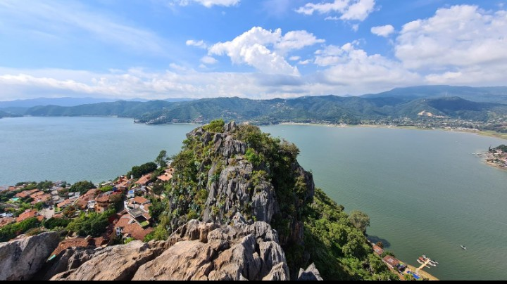
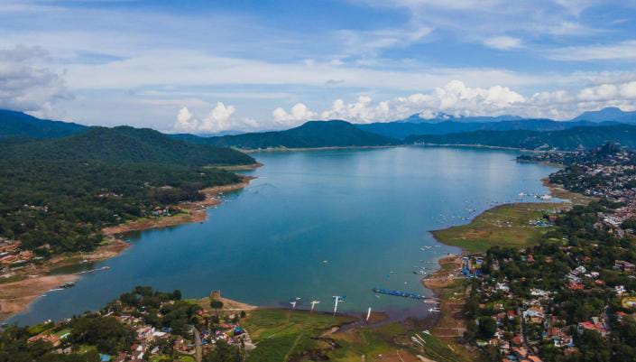

Cascada velo de novia
"El Lago de Valle de Bravo es uno de los atractivos turísticos más importantes del municipio. Se encuentra rodeado de montañas, bosques y zonas habitadas que forman un paisaje muy característico de esta región del Estado de México. El lago se originó a partir de la construcción de la presa Miguel Alemán, que forma parte del sistema hidroeléctrico de la región. Características principales:
Paisaje natural:
sus aguas y las montañas que lo rodean crean un entorno ideal para descansar, contemplar la naturaleza y tomar fotografías.
Actividades turísticas
Los visitantes pueden disfrutar de paseos en embarcaciones autorizadas, recorridos por el malecón y actividades recreativas permitidas.
Importancia económica
Atrae turistas durante todo el año y beneficia a restaurantes, hoteles, comercios y prestadores de servicios.
Importancia ambiental
Es un cuerpo de agua relevante para la región, por lo que es importante evitar arrojar basura y cuidar sus alrededores.

La peña
"La Peña es uno de los miradores naturales más conocidos de Valle de Bravo. Se trata de una formación rocosa elevada desde la cual se pueden observar el lago, las casas del municipio y las montañas que rodean la región. Además de su belleza natural, tiene importancia histórica, ya que se relaciona con antiguos asentamientos prehispánicos de la zona. Características principales: Ubicación: se encuentra cerca del centro de Valle de Bravo, en el Estado de México.
Paisajes
Desde sus zonas elevadas se pueden contemplar vistas panorámicas del lago y del pueblo, con sus techos y construcciones tradicionales.
Actividades turísticas:
Se puede realizar una caminata para llegar a los puntos de observación, disfrutar del paisaje y tomar fotografías.
Importancia histórica
El lugar tiene antecedentes prehispánicos relacionados con los matlatzincas, uno de los pueblos indígenas que habitaron esta región. Importancia ambiental: su vegetación y sus formaciones rocosas forman parte del entorno natural característico de Valle de Bravo.

Lago de Valle de bravo
"El Lago de Valle de Bravo es uno de los atractivos turísticos más importantes del municipio. Se encuentra rodeado de montañas, bosques y zonas habitadas que forman un paisaje muy característico de esta región del Estado de México. El lago se originó a partir de la construcción de la presa Miguel Alemán, que forma parte del sistema hidroeléctrico de la región.
Características principales
Sus aguas y las montañas que lo rodean crean un entorno ideal para descansar, contemplar la naturaleza y tomar fotografías.
Actividades turísticas
Los visitantes pueden disfrutar de paseos en embarcaciones autorizadas, recorridos por el malecón y actividades recreativas permitidas.
Importancia económica
Atrae turistas durante todo el año y beneficia a restaurantes, hoteles, comercios y prestadores de servicios.
Importancia ambiental
Es un cuerpo de agua relevante para la región, por lo que es importante evitar arrojar basura y cuidar sus alrededores.
